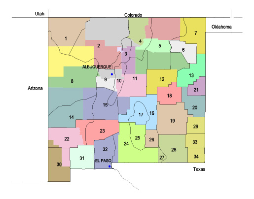

STATE Warning, Forecast & Observation Selection Page for NEW MEXICO Select desired area(s) by map number(s) or use drop down windows below 
Select by Area Name 17 Capitan/N Sacramento, S cen Lincoln mts 11 Central High Plains, SE Santa Fe, W San Miguel, Torrance (except ext W), Estancia Valley County, E Socorro 33 Central Lea 19 Chaves County Plains, Chaves (except extreme SW) 12 Conchas Lake/Guadalupe, Eastern San Miguel, Guadalupe 21 Curry 18 De Baca 28 Eddy County Plains, Eddy (except extreme W) 7 Far NE Plains, Union (except extreme NW), Extreme SE Colfax 26 Guadalupe mts, Extreme SW Chaves of Chaves County 27 Guadalupe mts, Extreme W Eddy of Eddy County 6 Harding 16 Lincoln County High Plains/Lincoln (except South cen Lincoln), Hondo Valley 15 Lower Rio Grande Valley, Part of cen and E Socorro 9 Middle Rio Grande Valley, Ext S cen Sandoval, Valencia, Ext E Cibola, Bernalillo (except E and ext NW) 5 NE Highlands Colfax (except ext W and ext SE), Mora (except extreme W), Cen San Miguel, NW Union 29 Northern Lea 2 NW Mts, Rio Arriba, Sandoval, Los Alamos, NE McKinley, SE San Juan, extreme NW Santa Fe 1 NW Plateau, San Juan (except extreme SW & SE), N Central McKinley 13 Quay 20 Roosevelt 32 S Desert, Dona Ana (except extreme E) 25 S Sacramento mts, N cen Otero mts 30 SW Desert/Boothill, S Grant, Hidalgo (except extreme N) 31 SW Desert/Luna, Mimbres Basin 14 SW Mts/Upper Gila Region, Catron (except N), Part of W Socorro Region 22 SW Mts (extreme N Hildago), Grant (except S Grant), W Sierra, Lower Gila Region 10 Sandia/Manzano Mtns, SW Santa Fe, E Bernalillo, Ext SE Sandoval, Ext W Torrance, E Valencia, E Socorro 4 Sangre de Cristo mts, Taos, W Mora, SE Rio Arriba, NE Santa Fe, W Colfax, NW San Miguel 23 Sierra County Lakes Region, Sierra (except W Sierra) 34 Southern Lea 24 Tularosa Basin, Otero (except N cen), Extreme E Dona Anna, S Desert 3 Upper Rio Grande Valley, NW Santa Fe, part of SE Rio Arriba, part of SE Sandoval 8 W Cen Mtns, McKinley (except NC and NE), Cibola, N Catron, SW Sandoval, NW Bernalillo, NW Socorro